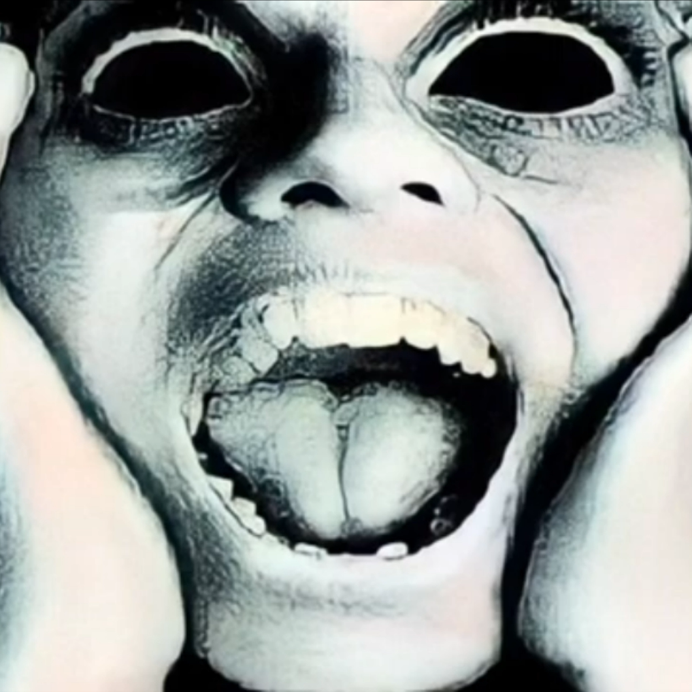

<button id="screamer">Нажми, если не боишься!</button>

<audio id="screamSound" src="audio/screamaudio.mp3"></audio>

<script>
  const button = document.getElementById("screamer");
  const scaryImage = document.getElementById("scaryImage");
  const screamSound = document.getElementById("screamSound");

  button.addEventListener("click", () => {
    screamSound.play(); // Воспроизводим звук
    scaryImage.style.display = "block"; // Показываем скример
    setTimeout(() => {
      scaryImage.style.display = "none"; // Убираем скример через 3 секунды
    }, 3000);
  });
</script>
